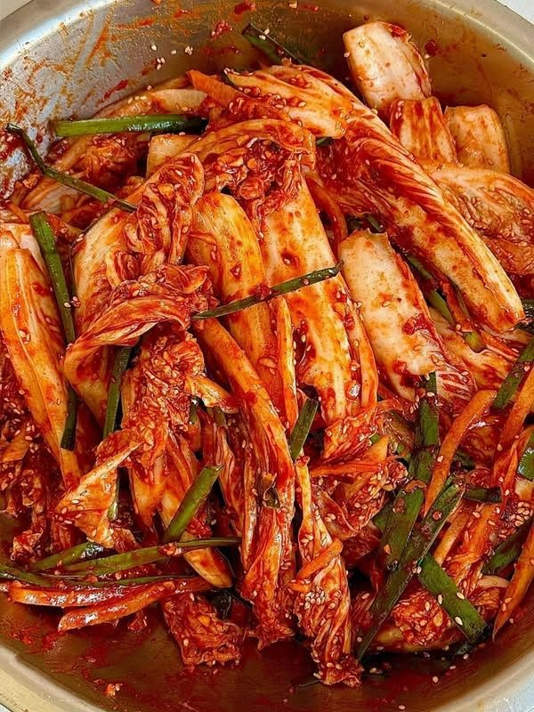

Gyeongbokgung Palace is one of the most famous historical landmarks in Seoul, South Korea. It was built in 1395 as the main royal palace of the Joseon Dynasty.
CLASSIC FOOD
Tteokbokki-made with baked potato

kimchi-made with cabbage and a lot of spices
korean culture
all the kpop culture concerts and many more crazy stuff